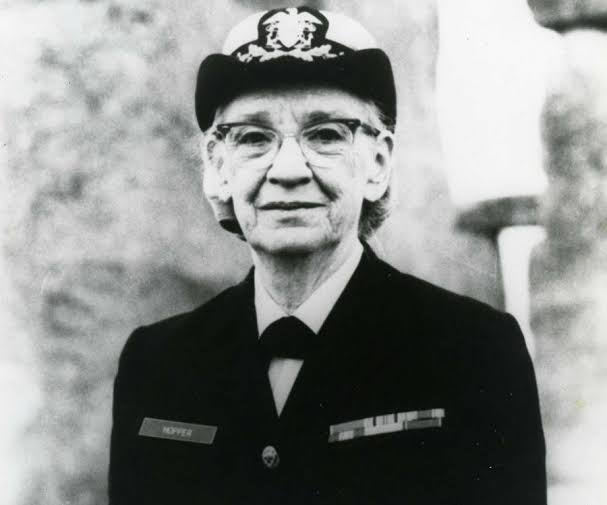

Выход в отставку.
В конце 1966 года вышла в отставку из Резерва Военно-морского флота США в звании коммандера. В августе 1967 года она была снова призвана на действительную службу сроком на полгода, это назначение перешло в бессрочный контракт. В 1971 году Хоппер опять вышла в отставку, однако в 1972 году её снова попросили вернуться на службу. В 1973 году адмирал Элмо Замволт повысил Хоппер до звания капитана (примерно соответствует капитану первого ранга). После того, как член Палаты Представителей Филипп Крейн увидел Хоппер в мартовском выпуске программы «60 минут» 1983 года, он направил совместное прошение от Палаты представителей президенту, прошение привело к возведению её в звание коммодор. (В 1985 ранг переименовали в «контр-адмирала» — англ. rear admiral.) 14 августа 1986 года была вынуждена снова подать в отставку из ВМС. На церемонии торжества, посвящённого её уходу, Хоппер была награждена «Медалью безупречной службы», высшей наградой нестроевой службы Министерства Обороны США. К моменту отставки была старейшим офицером, находящимся на действительной службе в ВМС США (79 лет, восемь месяцев и пять дней), а церемония её отставки проходила на старейшем активном судне Военно-морского флота США USS Constitution (188 лет, девять месяцев и 23 дня). После выхода в отставку была нанята на должность старшего консультанта в корпорацию DEC, где и работала вплоть до смерти в возрасте 85 лет в 1992 году. В последние годы читала лекции о заре компьютерной эры, о своей карьере и об усилиях, которые разработчики компьютеров могут предпринять, чтобы упростить жизнь пользователям, как в различных подразделениях DEC, так и на публичных мероприятиях. Многие лекции она иллюстрировала прямым телефонным шнуром компании Bell, обрезанным по длине в 30 см, чтобы продемонстрировать дистанцию, которую свет проходит за одну наносекунду. Кабель передавался аудитории в качестве наглядного пособия. Всегда надевала парадную флотскую форму для этих лекций, несмотря на то, что больше не состояла на действительной военной службе. Просветительскую и образовательную деятельность считала, наряду с разработкой компилятора, важным профессиональным результатом. Похоронена на Арлингтонском национальном кладбище со всеми воинскими почестями.